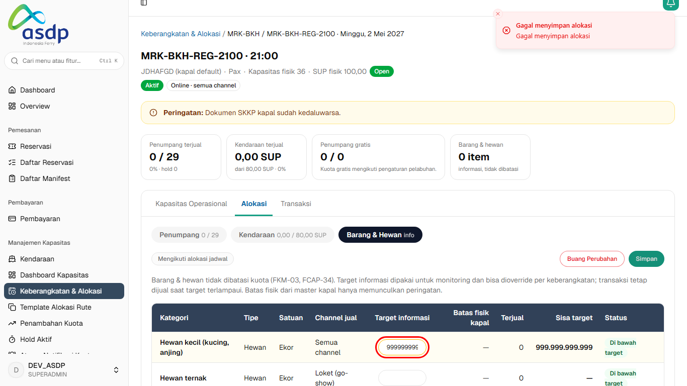
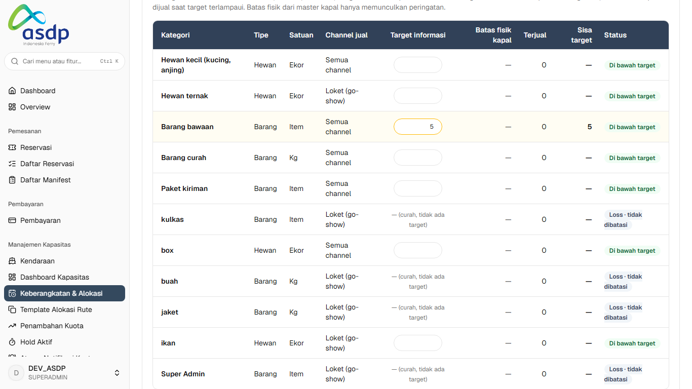
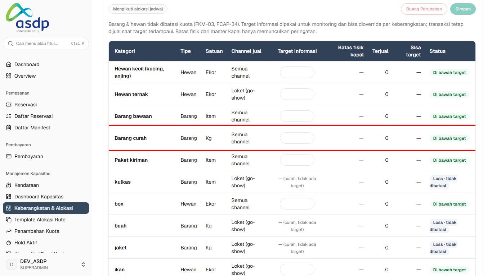

KB-T02 — Target barang/hewan sangat besar menyebabkan error server (HTTP 500) Langkah: 1. Buka menu Keberangkatan & Alokasi 2. Pilih rute MERAK - BAKAUHENI, tanggal 2027-05-02 3. Klik jadwal MRK-BKH-REG-2100 → tab Alokasi → sub-tab Barang & Hewan 4. Isi Target informasi "Hewan kecil (kucing, anjing)" = 999999999999 5. Klik Simpan Ekspektasi: Ditolak dengan pesan validasi yang jelas (mis. "Target maksimal …"), server membalas 4xx (bukan 500) Aktual: Server membalas HTTP 500, toast: "Gagal menyimpan alokasi / Gagal menyimpan alokasi" (tanpa alasan)

[TEMUAN] KB-T02 — Target barang/hewan sangat besar menyebabkan error server (HTTP 500) Langkah: 1. Buka menu Keberangkatan & Alokasi 2. Pilih rute MERAK - BAKAUHENI, tanggal 2027-05-02 3. Klik jadwal MRK-BKH-REG-2100 → tab Alokasi → sub-tab Barang & Hewan 4. Isi Target informasi "Hewan kecil (kucing, anjing)" = 999999999999 5. Klik Simpan Ekspektasi: Ditolak dengan pesan validasi yang jelas (mis. "Target maksimal …"), server membalas 4xx (bukan 500) Aktual: Server membalas HTTP 500, toast: "Gagal menyimpan alokasi / Gagal menyimpan alokasi" (tanpa alasan) (bukti: hasil\bukti\KB-T02_20261112-091436.png)
KB-T03 — Target barang/hewan yang sudah tersimpan hilang diam-diam saat Simpan berikutnya Langkah: 1. Buka menu Keberangkatan & Alokasi 2. Pilih rute MERAK - BAKAUHENI, tanggal 2027-05-02 3. Klik jadwal MRK-BKH-REG-2100 → tab Alokasi → sub-tab Barang & Hewan 4. Isi target "Hewan kecil (kucing, anjing)" = 10 → Simpan → reload: target = 10 5. Isi target "Barang bawaan" = 5 → Simpan (toast "Alokasi berhasil disimpan") 6. Reload halaman Ekspektasi: Target "Hewan kecil (kucing, anjing)" tetap 10 dan "Barang bawaan" = 5 Aktual: Target "Hewan kecil (kucing, anjing)" = "(kosong)", "Barang bawaan" = "5" — target sebelumnya terhapus tanpa pemberitahuan

[TEMUAN] KB-T03 — Target barang/hewan yang sudah tersimpan hilang diam-diam saat Simpan berikutnya Langkah: 1. Buka menu Keberangkatan & Alokasi 2. Pilih rute MERAK - BAKAUHENI, tanggal 2027-05-02 3. Klik jadwal MRK-BKH-REG-2100 → tab Alokasi → sub-tab Barang & Hewan 4. Isi target "Hewan kecil (kucing, anjing)" = 10 → Simpan → reload: target = 10 5. Isi target "Barang bawaan" = 5 → Simpan (toast "Alokasi berhasil disimpan") 6. Reload halaman Ekspektasi: Target "Hewan kecil (kucing, anjing)" tetap 10 dan "Barang bawaan" = 5 Aktual: Target "Hewan kecil (kucing, anjing)" = "(kosong)", "Barang bawaan" = "5" — target sebelumnya terhapus tanpa pemberitahuan (bukti: hasil\bukti\KB-T03_20261112-091527.png)
KB-T01 — Kategori "Barang curah" tidak mengikuti aturan barang curah Langkah: 1. Buka menu Keberangkatan & Alokasi 2. Pilih rute MERAK - BAKAUHENI, tanggal 2027-05-02 3. Klik jadwal MRK-BKH-REG-2100 → tab Alokasi → sub-tab Barang & Hewan 4. Lihat baris kategori "Barang curah" 5. Baca keterangan "Barang curah hanya dijual go-show di loket dan bersifat loss" Ekspektasi: Channel jual "Loket (go-show)", tanpa target ("— (curah, tidak ada target)"), status "Loss · tidak dibatasi" Aktual: Channel jual "Semua channel", ada input target, status "Di bawah target"

[TEMUAN] KB-T01 — Kategori "Barang curah" tidak mengikuti aturan barang curah
Langkah:
1. Buka menu Keberangkatan & Alokasi
2. Pilih rute MERAK - BAKAUHENI, tanggal 2027-05-02
3. Klik jadwal MRK-BKH-REG-2100 → tab Alokasi → sub-tab Barang & Hewan
4. Lihat baris kategori "Barang curah"
5. Baca keterangan "Barang curah hanya dijual go-show di loket dan bersifat loss"
Ekspektasi: Channel jual "Loket (go-show)", tanpa target ("— (curah, tidak ada target)"), status "Loss · tidak dibatasi"
Aktual: Channel jual "Semua channel", ada input target, status "Di bawah target"
(bukti: hasil\bukti\KB-T01_20261112-091559.png)Tidak ada test yang gagal.
Tidak ada gangguan koneksi.
Tidak ada.
| No | Berkas | Test | Jenis | Status | Detik |
|---|---|---|---|---|---|
| 1 | UI\keberangkatan-barang-ubah.spec.ts | Keberangkatan — Barang & Hewan (ubah data + restore) > [Positif] KB-10 simpan target 10 → label "override", Sisa target 10, bertahan setelah reload | PEMERIKSAAN | LULUS | 39.6 |
| 2 | UI\keberangkatan-barang-ubah.spec.ts | Keberangkatan — Barang & Hewan (ubah data + restore) > [Positif] KB-11 kosongkan target lalu Simpan → kembali ke nilai jadwal | PEMERIKSAAN | LULUS | 42.9 |
| 3 | UI\keberangkatan-barang-ubah.spec.ts | Keberangkatan — Barang & Hewan (ubah data + restore) > [Edge] KB-12 target 1 (nilai terkecil yang bermakna) → tersimpan | PEMERIKSAAN | LULUS | 36.6 |
| 4 | UI\keberangkatan-barang-ubah.spec.ts | Keberangkatan — Barang & Hewan (ubah data + restore) > [Temuan] KB-T02 target sangat besar seharusnya ditolak dengan pesan validasi, bukan error server (HTTP 500) | PEMERIKSAAN | LULUS | 40.1 |
| 5 | UI\keberangkatan-barang-ubah.spec.ts | Keberangkatan — Barang & Hewan (ubah data + restore) > [Temuan] KB-T03 Simpan berikutnya seharusnya TIDAK menghapus target yang sudah tersimpan | PEMERIKSAAN | LULUS | 46.5 |
| 6 | UI\keberangkatan-barang.spec.ts | Keberangkatan — Barang & Hewan (read-only) > [Positif] KB-01 tabel & aturan tampil lengkap | PEMERIKSAAN | LULUS | 4.1 |
| 7 | UI\keberangkatan-barang.spec.ts | Keberangkatan — Barang & Hewan (read-only) > [Positif] KB-02 kategori curah (loket go-show): tanpa input target & status "Loss · tidak dibatasi"; kategori lain punya input | PEMERIKSAAN | LULUS | 4.2 |
| 8 | UI\keberangkatan-barang.spec.ts | Keberangkatan — Barang & Hewan (read-only) > [Positif] KB-03 isi target 10 → Sisa target = 10 − terjual (preview), Simpan aktif; Buang mengembalikan | PEMERIKSAAN | LULUS | 3.2 |
| 9 | UI\keberangkatan-barang.spec.ts | Keberangkatan — Barang & Hewan (read-only) > [Negatif] KB-04 input target: negatif → 0, desimal → bilangan bulat, huruf ditolak | PEMERIKSAAN | LULUS | 3.3 |
| 10 | UI\keberangkatan-barang.spec.ts | Keberangkatan — Barang & Hewan (read-only) > [Temuan] KB-T01 kategori "Barang curah" seharusnya mengikuti aturan curah (go-show loket, tanpa target) [perlu konfirmasi] | PEMERIKSAAN | LULUS | 3.1 |